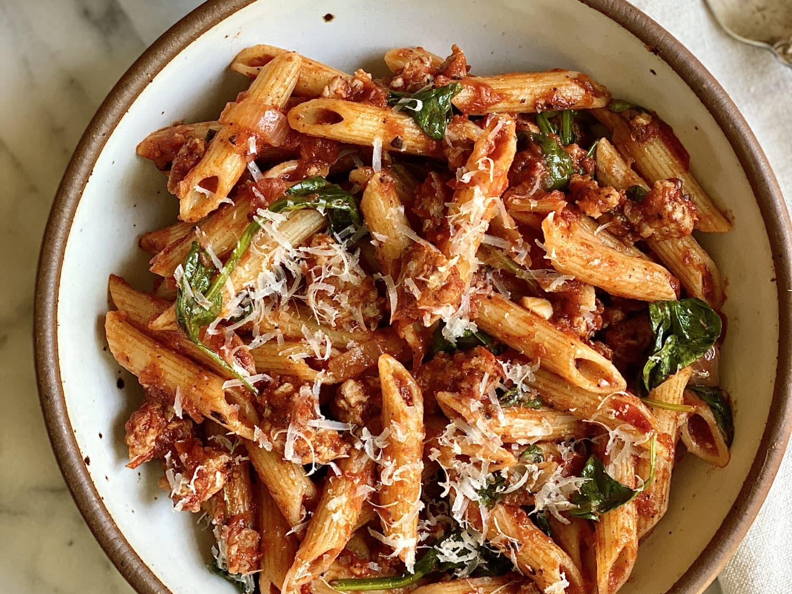
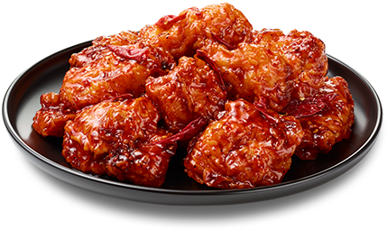
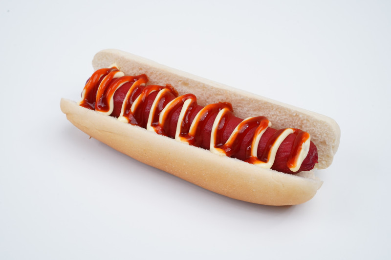
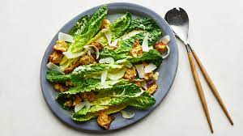

pizza

baked in an oven or gas stove or oven, and is usually covered with tomato sauce and cheese, and other desired ingredients are added to the bread. The cheese used is usually mozzarella cheese or pizza cheese. Various ingredients are also used to prepare pizza.
pasta
Pasta or kherak, meaning dough, is a general term for various types of Italian noodles, made from flour, water or egg dough . Pasta is available in about 350 different forms. Some popular forms of pasta are spaghetti, macaroni, fusilli, rigatoni, shells, capellini, penne, linguini, bucatini, tagliatelle, tortellini, ravioli, and lasagna read more..
chicken
Chicken is known as the most common poultry meat in the world. Chicken is prepared by grilling, roasting, frying, steaming and stewing. read more..
hotdog
Hot dog hot sandwich includes cooked sausage - steamed, grilled or fried - and soft fantasy bun for hot dog, which is also served with lettuce, mustard sauce, ketchup sauce and spices, and it has different types and sizes. It is not known when and by whom this name was chosen for this type of sandwich. read more..
salad
Salad is a food that is consumed before the meal as an appetizer, after the main meal as a separate meal, together with the main meal, or as a main meal itself. The word in French comes from a Latin word that means salty and coated salt read more..